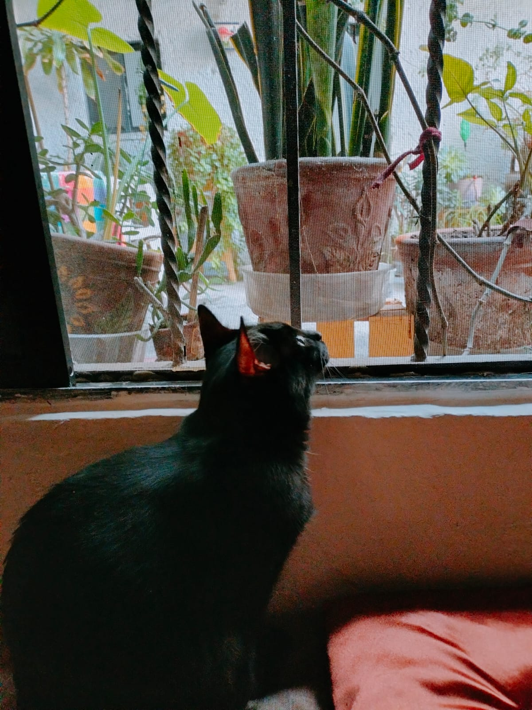

Mi nombre es Lizbet sin H  pero, mayormente prefiero que me llamen Lizz
pero, mayormente prefiero que me llamen Lizz
Soy QA manual y en los últimos años he estado realizando pruebas en sitios web y aplicaciones móviles. (Si deseas saber más te invito a que descargues mi CV)
Me destaco por ser una persona muy curiosa, siempre quiero y necesito saber el porqué de las cosas lo que me lleva a averiguar
todo lo relacionado al desarrollo del producto que se va a probar.
Agradezco mucho tener amistades del area de Desarrollo porque me ayuda bastante a relacionarme y comunicarme fácilmente con nuevos compañeros de trabajo.

Actualmente vivo en CDMX
Tengo poco más de 5 años viviendo en la CDMX, me agrada salir cuando todo está más tranquilo y así poder disfrutar el recorrido.
Por ello espero encontrar una oportunidad de forma remota o hibrida donde se me permita acudir solo algunos días a oficina, ya que esto me permitiría tener espacio para realizar cosas de índole personal como por ejemplo: Ir al gym, tomar mis clases de inglés, ir a alguna cita médica etc, sin que el traslado al trabajo me reste tiempo para ello.
Por último pero no menos importante, tengo una gatita que es muy exigente, llamada Shuri.
 Shuri
Curiosidades sobre mí:
Me gustan mucho las series de crimenes, investigaciones o de ciencia y recientemente comencé a ver k-dramas.
Me gustan los animales y me gusta apoyar a los refugios cuando tengo la posibilidad.
Mis redes: